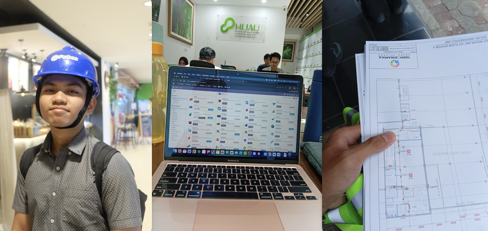
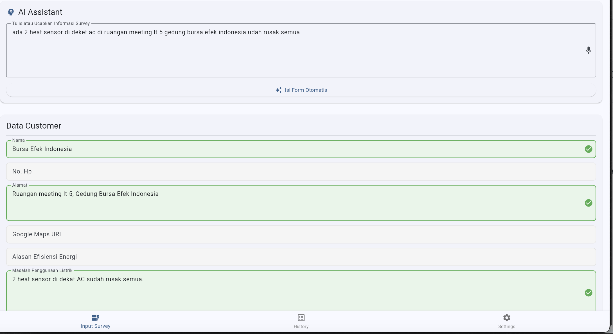

Photo caption: Block M Plaza project survey, ERP configuration during office hour, project collaboration with TEDES.ID (from left to right).
[WRITER'S NOTE] The first month in Ferbos, i was tasked to build an app that assists field worker's ongoing survey, the idea was that surveyor may input the essential data (e.g metadata, image, reports, etc) and the app would automatically sync to the company's database. It was an offline first app, so the feature and UI should be easy to use and support data caching.
My second project would be a project to rebrand HIJAU's company website as well as to make brand new custom ERP module tailored to HIJAU's requests, the company's website should be good as new with newly added features before a certain amount of time. All of the pages were redesigned and reprogrammed with an addition of certain custom module features for portfolio, career, and much more.
Similarly, my work with WakafEnergi involved rebuilding the system from the ground up. I was tasked to give the platform a fresh design and visual identity, while making sure that the technical side held together behind the scenes. This included working with the API and make sure that data from the solar panels flowed correctly from the monitoring system (HomeAssistant) to the website since the website pulling the data from each installed solar panels.
During the same time, i also contributed to the World Bank project to collect real-time energy data from 400 households, making sure the field data alings with the inputted data from the company's ERP database.
And once the World bank project is wrapped up, my project would be email data migration for TEDES.ID company. Migrating each employee's company email account from Hostinger/Microsoft Outlook to Gmail Google Workspace while avoiding data loss.

Photo caption: Survey tool with AI Assisted auto-fill form.